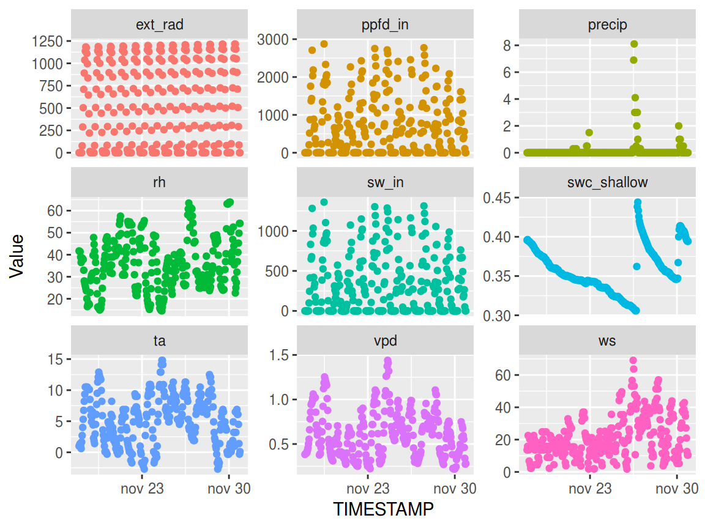
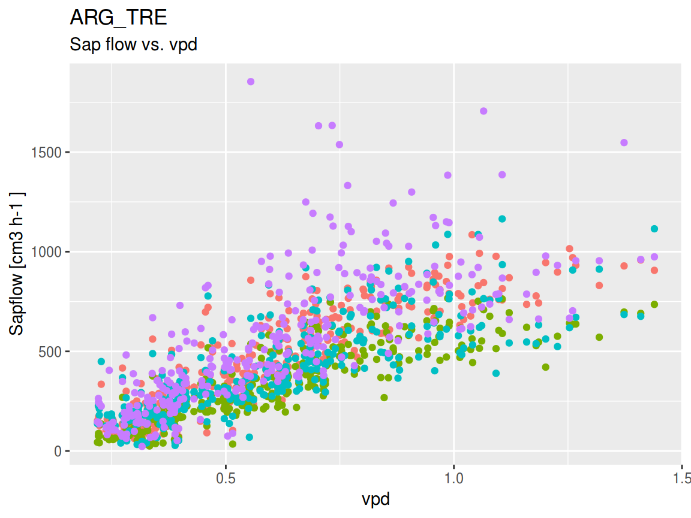
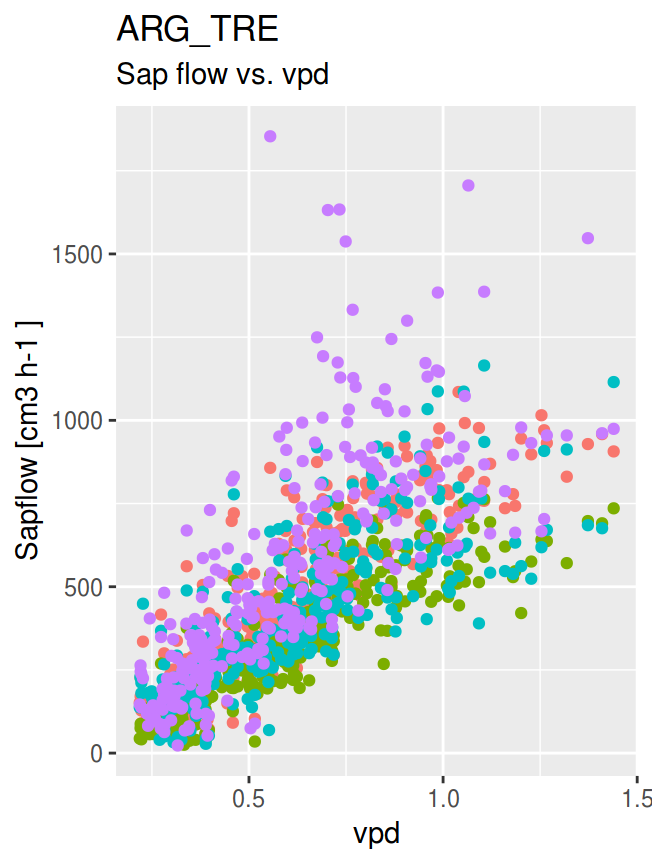
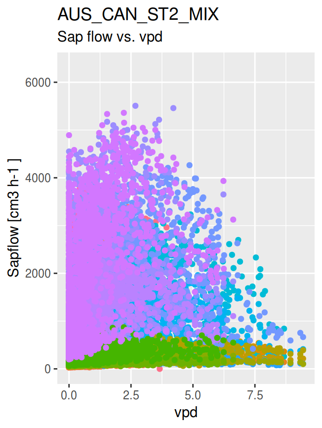

sfn_data classes
Victor Granda (Sapfluxnet Team)
2019-03-07
Source:vignettes/sfn-data-classes.Rmd
sfn-data-classes.Rmd
sfn_data
snf_data is an S4 class designed for store and interact with sapflow data at individual plant level (not raw data), primarily from Sapfluxnet project sites data and metadata.
S4 Slots
sfn_data class has twelve different slots:
sapf_data: Tibble containing the sapflow data, each column representing an individual tree, without any TIMESTAMP variable.
env_data: Tibble containing the environmental data, each column an environmental variable, without any TIMESTAMP variable. It must have the same
nrowthatsapf_data, in order to be able to combine both in further analyses or aggregations.sapf_flags: Tibble with the same dimensions as
sapf_data, containing the flags (special remarks indicating possible outliers or any annotation of interest) for each observation insapf_data.env_flags: Tibble with the same dimensions as
env_data, containing the flags for each observation inenv_data.si_code: Character vector of length 1 with the site code. Useful for further analyses or aggregations in order to identify the site when working with more than one.
timestamp: POSIXct vector of length equal to
nrow(sapf_data)with the timestamp values.solar_timestamp: POSIXct vector of length equal to
nrow(sapf_data)with the aparent solar timestamp.site_md: Tibble with the site metadata. See
sfn_vars_to_filter()for a list of possible metadata variables. This variables are not mandatory, and new ones can be added.stand_md: Tibble with the stand metadata. See
sfn_vars_to_filter()for a list of possible metadata variables. This variables are not mandatory, and new ones can be added.species_md: Tibble with the species metadata. See
sfn_vars_to_filter()for a list of possible metadata variables. This variables are not mandatory, and new ones can be added.plant_md: Tibble with the plant metadata. See
sfn_vars_to_filter()for a list of possible metadata variables. This variables are not mandatory, and new ones can be added.env_md: Tibble with the environmental metadata. See
sfn_vars_to_filter()for a list of possible metadata variables. This variables are not mandatory, and new ones can be added.
sfn_data design
The schematics of the class are summarised in Fig 1.

sfn_data schematics
This design have some characteristics:
-
Dimensions: Dimensions must comply:
nrow(sapf_data) == nrow(env_data) == nrow(sapf_flags) == nrow(env_flags) == length(timestamp) == length(solar_timestamp)ncol(sapf_data) == ncol(sapf_flags)ncol(env_data) == ncol(env_flags)In the case of differences in the dimensions between environmental and sap flow data, NAs must be added in the corresponding places when equalising both TIMESTAMPs (i.e. if env data is longer than sapf data, rows are added to the later with NAs to make them equal, and flags (“NA_ADDED”) are raised to indicate the adding).
si_code slot: This slot indicates the site. This is useful for identifying the site in the metrics functions results.
Compartimentalization:
timestampandsolar_timestampare isolated from data (sapf and env) in their own slot. This made easier subsetting the object and open the possibility of working with the timestamps only.-
Flags: Two slots are used for storing data flags. As the flag slots have the same dimensions as the corresponding dataset slot, selection of flagged data is straightforward:
sapf_data[flag_data == "flag", ]
Methods
Some methods are included in the class:
-
show: calling a sfn_data object shows info about it
library(sapfluxnetr)
data('ARG_TRE', package = 'sapfluxnetr')
ARG_TRE
#> sfn_data object
#> Data from ARG_TRE site
#>
#> Data kindly provided by Seabstian Pfautsch from University of Sydney
#> and Pablo Peri from Instituto Nacional de Tecnología Agropecuaria
#>
#> Site related literature: DOI 10.1007/s00468-013-0935-4
#>
#> Sapflow data: 312 observations of 4 trees/plants
#> Species present: Nothofagus antarctica
#>
#> Environmental data: 312 observations.
#> Variables present:
#> ta rh vpd sw_in ws precip swc_shallow ppfd_in ext_rad
#>
#> Biome: Mediterranean
#>
#> TIMESTAMP span: 2009-11-18 -03--2009-11-30 23:00:00 -03
#>
#> Solar TIMESTAMP span: 2009-11-17 22:24:58 UTC--2009-11-30 21:20:48 UTC
#>
#> Sapflow data flags:
#> No flags present
#>
#> Environmental data flags:
#> RANGE_WARN OUT_WARN CALCULATED
#> 18 24 624-
get methods: methods to get any slot outside the object. In the case of sapf and env data, TIMESTAMP is added (based on thesolarargument) in order to obtain fully functional datasets. See?sfn_get_methodsfor more details.
get_sapf_data(ARG_TRE, solar = FALSE)
#> # A time tibble: 312 x 5
#> # Index: TIMESTAMP
#> TIMESTAMP ARG_TRE_Nan_Jt_1 ARG_TRE_Nan_Jt_2 ARG_TRE_Nan_Jt_3
#> <dttm> <dbl> <dbl> <dbl>
#> 1 2009-11-18 00:00:00 322. 190. 313.
#> 2 2009-11-18 01:00:00 293. 157. 293.
#> 3 2009-11-18 02:00:00 298. 178. 331.
#> 4 2009-11-18 03:00:00 298. 168. 299.
#> 5 2009-11-18 04:00:00 301. 170. 292.
#> 6 2009-11-18 05:00:00 320. 198. 295.
#> 7 2009-11-18 06:00:00 343. 196. 301.
#> 8 2009-11-18 07:00:00 324. 194. 292.
#> 9 2009-11-18 08:00:00 353. 284. 323.
#> 10 2009-11-18 09:00:00 433. 340. 352.
#> # … with 302 more rows, and 1 more variable: ARG_TRE_Nan_Jt_4 <dbl>
get_sapf_data(ARG_TRE, solar = TRUE)
#> # A time tibble: 312 x 5
#> # Index: TIMESTAMP
#> TIMESTAMP ARG_TRE_Nan_Jt_1 ARG_TRE_Nan_Jt_2 ARG_TRE_Nan_Jt_3
#> <dttm> <dbl> <dbl> <dbl>
#> 1 2009-11-17 22:24:58 322. 190. 313.
#> 2 2009-11-17 23:24:58 293. 157. 293.
#> 3 2009-11-18 00:24:43 298. 178. 331.
#> 4 2009-11-18 01:24:43 298. 168. 299.
#> 5 2009-11-18 02:24:43 301. 170. 292.
#> 6 2009-11-18 03:24:43 320. 198. 295.
#> 7 2009-11-18 04:24:43 343. 196. 301.
#> 8 2009-11-18 05:24:43 324. 194. 292.
#> 9 2009-11-18 06:24:43 353. 284. 323.
#> 10 2009-11-18 07:24:43 433. 340. 352.
#> # … with 302 more rows, and 1 more variable: ARG_TRE_Nan_Jt_4 <dbl>
get_env_data(ARG_TRE) # solar default is FALSE
#> # A time tibble: 312 x 10
#> # Index: TIMESTAMP
#> TIMESTAMP ta rh vpd sw_in ws precip swc_shallow
#> <dttm> <dbl> <dbl> <dbl> <dbl> <dbl> <dbl> <dbl>
#> 1 2009-11-18 00:00:00 1 41.7 0.383 0 13.6 0 0.396
#> 2 2009-11-18 01:00:00 1.2 41.5 0.389 0 15.8 0 0.396
#> 3 2009-11-18 02:00:00 1.4 41.4 0.396 0 22.5 0 0.395
#> 4 2009-11-18 03:00:00 1 38.9 0.401 0 13.6 0 0.394
#> 5 2009-11-18 04:00:00 0.6 36.5 0.405 0 6.72 0 0.394
#> 6 2009-11-18 05:00:00 1.65 37.5 0.430 0 20.3 0 0.394
#> 7 2009-11-18 06:00:00 2.7 38.5 0.456 0 4.48 0 0.393
#> 8 2009-11-18 07:00:00 4 38.2 0.503 0 2.24 0 0.392
#> 9 2009-11-18 08:00:00 5.3 37.8 0.554 99.4 2.24 0 0.391
#> 10 2009-11-18 09:00:00 6.75 33.0 0.660 245 4.48 0 0.391
#> # … with 302 more rows, and 2 more variables: ppfd_in <dbl>, ext_rad <dbl>
get_sapf_flags(ARG_TRE) # solar default is FALSE
#> # A time tibble: 312 x 5
#> # Index: TIMESTAMP
#> TIMESTAMP ARG_TRE_Nan_Jt_1 ARG_TRE_Nan_Jt_2 ARG_TRE_Nan_Jt_3
#> <dttm> <chr> <chr> <chr>
#> 1 2009-11-18 00:00:00 "" "" ""
#> 2 2009-11-18 01:00:00 "" "" ""
#> 3 2009-11-18 02:00:00 "" "" ""
#> 4 2009-11-18 03:00:00 "" "" ""
#> 5 2009-11-18 04:00:00 "" "" ""
#> 6 2009-11-18 05:00:00 "" "" ""
#> 7 2009-11-18 06:00:00 "" "" ""
#> 8 2009-11-18 07:00:00 "" "" ""
#> 9 2009-11-18 08:00:00 "" "" ""
#> 10 2009-11-18 09:00:00 "" "" ""
#> # … with 302 more rows, and 1 more variable: ARG_TRE_Nan_Jt_4 <chr>
get_env_flags(ARG_TRE) # solar default is FALSE
#> # A time tibble: 312 x 10
#> # Index: TIMESTAMP
#> TIMESTAMP ta rh vpd sw_in ws precip swc_shallow
#> <dttm> <chr> <chr> <chr> <chr> <chr> <chr> <chr>
#> 1 2009-11-18 00:00:00 "" "" "" "" "" "" ""
#> 2 2009-11-18 01:00:00 "" "" "" "" "" "" ""
#> 3 2009-11-18 02:00:00 "" "" "" "" "" "" ""
#> 4 2009-11-18 03:00:00 "" "" "" "" "" "" ""
#> 5 2009-11-18 04:00:00 "" "" "" "" "" "" ""
#> 6 2009-11-18 05:00:00 "" "" "" "" "" "" ""
#> 7 2009-11-18 06:00:00 "" "" "" "" "" "" ""
#> 8 2009-11-18 07:00:00 "" "" "" "" "" "" ""
#> 9 2009-11-18 08:00:00 "" "" "" "" "" "" ""
#> 10 2009-11-18 09:00:00 "" "" "" "" "" "" ""
#> # … with 302 more rows, and 2 more variables: ppfd_in <chr>, ext_rad <chr>
get_si_code(ARG_TRE)
#> [1] "ARG_TRE"
get_timestamp(ARG_TRE)[1:10]
#> [1] "2009-11-18 00:00:00 -03" "2009-11-18 01:00:00 -03"
#> [3] "2009-11-18 02:00:00 -03" "2009-11-18 03:00:00 -03"
#> [5] "2009-11-18 04:00:00 -03" "2009-11-18 05:00:00 -03"
#> [7] "2009-11-18 06:00:00 -03" "2009-11-18 07:00:00 -03"
#> [9] "2009-11-18 08:00:00 -03" "2009-11-18 09:00:00 -03"
get_solar_timestamp(ARG_TRE)[1:10]
#> [1] "2009-11-17 22:24:58 UTC" "2009-11-17 23:24:58 UTC"
#> [3] "2009-11-18 00:24:43 UTC" "2009-11-18 01:24:43 UTC"
#> [5] "2009-11-18 02:24:43 UTC" "2009-11-18 03:24:43 UTC"
#> [7] "2009-11-18 04:24:43 UTC" "2009-11-18 05:24:43 UTC"
#> [9] "2009-11-18 06:24:43 UTC" "2009-11-18 07:24:43 UTC"
get_site_md(ARG_TRE)
#> # A tibble: 1 x 24
#> si_addcontr_ema… si_addcontr_fir… si_addcontr_ins… si_addcontr_las…
#> <chr> <chr> <chr> <chr>
#> 1 <NA> Pablo Instituto Nacio… Peri
#> # … with 20 more variables: si_code <chr>, si_contact_email <chr>,
#> # si_contact_firstname <chr>, si_contact_institution <chr>,
#> # si_contact_lastname <chr>, si_country <chr>, si_dendro_network <lgl>,
#> # si_dist_mgmt <chr>, si_elev <int>, si_flux_network <lgl>,
#> # si_igbp <chr>, si_lat <dbl>, si_long <dbl>, si_name <chr>,
#> # si_paper <chr>, si_remarks <lgl>, is_inside_country <lgl>,
#> # si_mat <dbl>, si_map <dbl>, si_biome <chr>
get_stand_md(ARG_TRE)
#> # A tibble: 1 x 18
#> st_age st_aspect st_basal_area st_clay_perc st_density st_growth_condi…
#> <int> <chr> <dbl> <lgl> <int> <chr>
#> 1 140 Flat 19.4 NA 512 Naturally regen…
#> # … with 12 more variables: st_height <int>, st_lai <lgl>, st_name <lgl>,
#> # st_remarks <lgl>, st_sand_perc <lgl>, st_silt_perc <lgl>,
#> # st_soil_depth <int>, st_soil_texture <chr>, st_terrain <chr>,
#> # st_treatment <lgl>, si_code <chr>, st_USDA_soil_texture <chr>
get_species_md(ARG_TRE)
#> # A tibble: 1 x 5
#> sp_basal_area_perc sp_leaf_habit sp_name sp_ntrees si_code
#> <int> <chr> <chr> <int> <chr>
#> 1 100 cold deciduous Nothofagus antarctica 4 ARG_TRE
get_plant_md(ARG_TRE)
#> # A tibble: 4 x 26
#> pl_age pl_azimut_int pl_bark_thick pl_code pl_dbh pl_height pl_leaf_area
#> <int> <chr> <dbl> <chr> <dbl> <lgl> <dbl>
#> 1 140 Corrected, m… 23.5 ARG_TR… 23.6 NA 29.7
#> 2 140 No azimuthal… 22.5 ARG_TR… 20.2 NA 13.0
#> 3 140 No azimuthal… 22 ARG_TR… 23.8 NA 29.8
#> 4 140 No azimuthal… 23.5 ARG_TR… 19.5 NA 15.1
#> # … with 19 more variables: pl_name <chr>, pl_radial_int <chr>,
#> # pl_remarks <lgl>, pl_sap_units <chr>, pl_sapw_area <dbl>,
#> # pl_sapw_depth <dbl>, pl_sens_calib <lgl>, pl_sens_cor_grad <chr>,
#> # pl_sens_cor_zero <chr>, pl_sens_hgt <dbl>, pl_sens_length <int>,
#> # pl_sens_man <chr>, pl_sens_meth <chr>, pl_sens_timestep <int>,
#> # pl_social <chr>, pl_species <chr>, pl_treatment <lgl>, si_code <chr>,
#> # pl_sap_units_orig <chr>
get_env_md(ARG_TRE)
#> # A tibble: 1 x 17
#> env_leafarea_se… env_netrad env_plant_watpot env_ppfd_in env_precip
#> <lgl> <chr> <chr> <chr> <chr>
#> 1 NA Not provi… leaf: midday Not provid… Clearing
#> # … with 12 more variables: env_remarks <lgl>, env_rh <chr>,
#> # env_swc_deep_depth <lgl>, env_swc_shallow_depth <int>,
#> # env_sw_in <chr>, env_ta <chr>, env_time_daylight <lgl>,
#> # env_timestep <int>, env_time_zone <chr>, env_vpd <chr>, env_ws <chr>,
#> # si_code <chr>-
assignation: methods for"<-"are implemented, allowing transformation of the slots. This is used internally in some functions but is not recommended except for updating metadata slots. In data slots this changes are not reflected in the flags, so the reproducibility and traceability will be lost if used without care. See?sfn_replacement_methodsfor more details.
# extraction and modification
foo_site_md <- get_site_md(ARG_TRE)
foo_site_md[['si_biome']]
#> [1] "Mediterranean"
foo_site_md[['si_biome']] <- 'Temperate forest'
# assignation
get_site_md(ARG_TRE) <- foo_site_md
# check it worked
get_site_md(ARG_TRE)[['si_biome']]
#> [1] "Temperate forest"-
validation: a validation method is implemented in order to avoid creation of invalid sfn_data objects (i.e objects with different data dimensions, objects without metadata…)
# get sapflow data
foo_bad_sapf <- get_sapf_data(ARG_TRE)
# pull a row, now it has diferent dimensions than
foo_bad_sapf <- foo_bad_sapf[-1,]
# try to assign the incorrect data fails
get_sapf_data(ARG_TRE) <- foo_bad_sapf[,-1] # ERROR#> Error in `get_sapf_data<-`(`*tmp*`, value = structure(list(ARG_TRE_Nan_Jt_1 = c(292.9710029771, : new data is not valid: Error in validObject(object) :
#> invalid class "sfn_data" object: 1: nrow(sapf_data) != nrow(env_data)
#> invalid class "sfn_data" object: 2: nrow(sapf_data) != length(timestamp) | nrow(env_data) != length(timestamp)
#> invalid class "sfn_data" object: 3: nrow(*_flags) =! nrow(*_flags) | nrow(*_flags) =! nrow(*_data)# try to build a new object also fails
sfn_data(
sapf_data = foo_bad_sapf[,-1], # remember to remove timestamp column
env_data = get_env_data(ARG_TRE)[,-1],
sapf_flags = get_env_flags(ARG_TRE)[,-1],
env_flags = get_env_flags(ARG_TRE)[,-1],
si_code = get_si_code(ARG_TRE),
timestamp = get_timestamp(ARG_TRE),
solar_timestamp = get_solar_timestamp(ARG_TRE),
site_md = get_site_md(ARG_TRE),
stand_md = get_stand_md(ARG_TRE),
species_md = get_species_md(ARG_TRE),
plant_md = get_plant_md(ARG_TRE),
env_md = get_env_md(ARG_TRE)
)#> Error in validObject(.Object): invalid class "sfn_data" object: 1: nrow(sapf_data) != nrow(env_data)
#> invalid class "sfn_data" object: 2: nrow(sapf_data) != length(timestamp) | nrow(env_data) != length(timestamp)
#> invalid class "sfn_data" object: 3: nrow(*_flags) =! nrow(*_flags) | nrow(*_flags) =! nrow(*_data)Utilities
sapfluxnetr package offers some utilities to visulaize and work with sfn_data objects:
sfn_plot
This function allows to plot sfn_data objects. See ?sfn_plot for more details.
library(ggplot2)
sfn_plot(ARG_TRE, type = 'env') +
facet_wrap(~ Variable, ncol = 3, scales = 'free_y') +
theme(legend.position = 'none')

sfn_filter
This function emulates filter function from dplyr package for sfn_data objects. Useful to filter by some especific timestamp. Be advised, using this funcion to filter by sapflow or environmental variables can create TIMESTAMP gaps. See sfn_filter for more details.
library(lubridate)
#>
#> Attaching package: 'lubridate'
#> The following object is masked from 'package:base':
#>
#> date
library(dplyr)
#>
#> Attaching package: 'dplyr'
#> The following objects are masked from 'package:lubridate':
#>
#> intersect, setdiff, union
#> The following objects are masked from 'package:stats':
#>
#> filter, lag
#> The following objects are masked from 'package:base':
#>
#> intersect, setdiff, setequal, union
# get only the values for november
sfn_filter(ARG_TRE, month(TIMESTAMP) == 11)
#> sfn_data object
#> Data from ARG_TRE site
#>
#> Data kindly provided by Seabstian Pfautsch from University of Sydney
#> and Pablo Peri from Instituto Nacional de Tecnología Agropecuaria
#>
#> Site related literature: DOI 10.1007/s00468-013-0935-4
#>
#> Sapflow data: 312 observations of 4 trees/plants
#> Species present: Nothofagus antarctica
#>
#> Environmental data: 312 observations.
#> Variables present:
#> ta rh vpd sw_in ws precip swc_shallow ppfd_in ext_rad
#>
#> Biome: Temperate forest
#>
#> TIMESTAMP span: 2009-11-18 -03--2009-11-30 23:00:00 -03
#>
#> Solar TIMESTAMP span: 2009-11-17 22:24:58 UTC--2009-11-30 21:20:48 UTC
#>
#> Sapflow data flags:
#> No flags present
#>
#> Environmental data flags:
#> RANGE_WARN OUT_WARN CALCULATED
#> 18 24 624
sfn_mutate
This function allows mutation of data variables inside the sfn_data object. Useful when you need to transform a variable to another units or similar. A flag (‘USER_MODF’) will be added to all values in the mutated variable. See sfn_mutate for more details.
At this moment, mutate does not allows creating new variables, only mutate existing variables
sfn_mutate_at
This function mutates all variables declared with the function provided. Useful when you need to conditionally transform the data, i.e. converting to NA sapflow values when an environmental variable exceeds some threshold. See sfn_mutate_at for more details.
foo_mutated_2 <- sfn_mutate_at(
ARG_TRE,
vars(one_of(names(get_sapf_data(ARG_TRE)[,-1]))),
funs(case_when(
ws > 25 ~ NA_real_,
TRUE ~ .
))
)
# see the difference between ARG_TRE and foo_mutated_2
get_sapf_data(ARG_TRE)
#> # A time tibble: 312 x 5
#> # Index: TIMESTAMP
#> TIMESTAMP ARG_TRE_Nan_Jt_1 ARG_TRE_Nan_Jt_2 ARG_TRE_Nan_Jt_3
#> <dttm> <dbl> <dbl> <dbl>
#> 1 2009-11-18 00:00:00 322. 190. 313.
#> 2 2009-11-18 01:00:00 293. 157. 293.
#> 3 2009-11-18 02:00:00 298. 178. 331.
#> 4 2009-11-18 03:00:00 298. 168. 299.
#> 5 2009-11-18 04:00:00 301. 170. 292.
#> 6 2009-11-18 05:00:00 320. 198. 295.
#> 7 2009-11-18 06:00:00 343. 196. 301.
#> 8 2009-11-18 07:00:00 324. 194. 292.
#> 9 2009-11-18 08:00:00 353. 284. 323.
#> 10 2009-11-18 09:00:00 433. 340. 352.
#> # … with 302 more rows, and 1 more variable: ARG_TRE_Nan_Jt_4 <dbl>
get_sapf_data(foo_mutated_2)
#> # A time tibble: 312 x 5
#> # Index: TIMESTAMP
#> TIMESTAMP ARG_TRE_Nan_Jt_1 ARG_TRE_Nan_Jt_2 ARG_TRE_Nan_Jt_3
#> <dttm> <dbl> <dbl> <dbl>
#> 1 2009-11-18 00:00:00 322. 190. 313.
#> 2 2009-11-18 01:00:00 293. 157. 293.
#> 3 2009-11-18 02:00:00 298. 178. 331.
#> 4 2009-11-18 03:00:00 298. 168. 299.
#> 5 2009-11-18 04:00:00 301. 170. 292.
#> 6 2009-11-18 05:00:00 320. 198. 295.
#> 7 2009-11-18 06:00:00 343. 196. 301.
#> 8 2009-11-18 07:00:00 324. 194. 292.
#> 9 2009-11-18 08:00:00 353. 284. 323.
#> 10 2009-11-18 09:00:00 433. 340. 352.
#> # … with 302 more rows, and 1 more variable: ARG_TRE_Nan_Jt_4 <dbl>
*_metrics functions
Family of functions to aggregate and summarise the site data. See ?metrics for more details.
foo_daily <- daily_metrics(ARG_TRE)
#> [1] "Crunching data for ARG_TRE. In large datasets this could take a while"
#> [1] "General data for ARG_TRE"
foo_daily[['sapf']][['sapf_gen']]
#> NULLFor full control of metrics and custom aggregations see vignette('custom-aggregation', package = 'sapfluxnetr')
sfn_data_multi
sfn_data_multi is an S4 class designed to store multiple sfn_data objects. It inherits from list so, in a nutshell, sfn_data_multi is a list of sfn_data objects.
Methods
sfn_data_multi has the following methods declared.
-
show: it shows the number, codes and combined timestamp span of sites in the multi object.
# creating a sfn_data_multi object
data(ARG_MAZ, package = 'sapfluxnetr')
data(AUS_CAN_ST2_MIX, package = 'sapfluxnetr')
multi_sfn <- sfn_data_multi(ARG_TRE, ARG_MAZ, AUS_CAN_ST2_MIX)
# show method
multi_sfn
#> sfn_data_multi object
#> 3 sites: ARG_TRE ARG_MAZ AUS_CAN_ST2_MIX
#> Approximate time span (UTC) for the combined sites: 2006-06-20 10:54:42 UTC--2009-11-18 22:24:18 UTC-
getmethods: they work the same as in thesfn_dataobjects, except they return a list, with the corresponding data for the sites in thesfn_data_multiobject as elements.
# get sapflow data
get_sapf_data(multi_sfn)
#> $ARG_TRE
#> # A time tibble: 312 x 5
#> # Index: TIMESTAMP
#> TIMESTAMP ARG_TRE_Nan_Jt_1 ARG_TRE_Nan_Jt_2 ARG_TRE_Nan_Jt_3
#> <dttm> <dbl> <dbl> <dbl>
#> 1 2009-11-18 00:00:00 322. 190. 313.
#> 2 2009-11-18 01:00:00 293. 157. 293.
#> 3 2009-11-18 02:00:00 298. 178. 331.
#> 4 2009-11-18 03:00:00 298. 168. 299.
#> 5 2009-11-18 04:00:00 301. 170. 292.
#> 6 2009-11-18 05:00:00 320. 198. 295.
#> 7 2009-11-18 06:00:00 343. 196. 301.
#> 8 2009-11-18 07:00:00 324. 194. 292.
#> 9 2009-11-18 08:00:00 353. 284. 323.
#> 10 2009-11-18 09:00:00 433. 340. 352.
#> # … with 302 more rows, and 1 more variable: ARG_TRE_Nan_Jt_4 <dbl>
#>
#> $ARG_MAZ
#> # A time tibble: 288 x 6
#> # Index: TIMESTAMP
#> TIMESTAMP ARG_MAZ_Npu_Jt_1 ARG_MAZ_Npu_Jt_2 ARG_MAZ_Npu_Jt_3
#> <dttm> <dbl> <dbl> <dbl>
#> 1 2009-11-19 00:00:00 1955. 754. 742.
#> 2 2009-11-19 01:00:00 1833. 752. 631.
#> 3 2009-11-19 02:00:00 1817. 795. 597.
#> 4 2009-11-19 03:00:00 1598. 788. 579.
#> 5 2009-11-19 04:00:00 1419. 780. 518.
#> 6 2009-11-19 05:00:00 1506. 735. 430.
#> 7 2009-11-19 06:00:00 1649. 720. 539.
#> 8 2009-11-19 07:00:00 1630. 882. 542.
#> 9 2009-11-19 08:00:00 1909. 1015. 655.
#> 10 2009-11-19 09:00:00 2849. 1459. 930.
#> # … with 278 more rows, and 2 more variables: ARG_MAZ_Npu_Jt_4 <dbl>,
#> # ARG_MAZ_Npu_Jt_5 <dbl>
#>
#> $AUS_CAN_ST2_MIX
#> # A time tibble: 17,808 x 35
#> # Index: TIMESTAMP
#> TIMESTAMP AUS_CAN_ST2_MIX… AUS_CAN_ST2_MIX… AUS_CAN_ST2_MIX…
#> <dttm> <dbl> <dbl> <dbl>
#> 1 2006-06-20 11:00:00 NA NA NA
#> 2 2006-06-20 11:30:00 NA NA NA
#> 3 2006-06-20 12:00:00 NA NA NA
#> 4 2006-06-20 12:30:00 NA NA NA
#> 5 2006-06-20 13:00:00 NA NA NA
#> 6 2006-06-20 13:30:00 NA NA NA
#> 7 2006-06-20 14:00:00 NA NA NA
#> 8 2006-06-20 14:30:00 NA NA NA
#> 9 2006-06-20 15:00:00 NA NA NA
#> 10 2006-06-20 15:30:00 NA NA NA
#> # … with 17,798 more rows, and 31 more variables:
#> # AUS_CAN_ST2_MIX_Egl_Js_4 <dbl>, AUS_CAN_ST2_MIX_Egl_Js_5 <dbl>,
#> # AUS_CAN_ST2_MIX_Ame_Js_6 <dbl>, AUS_CAN_ST2_MIX_Ame_Js_7 <dbl>,
#> # AUS_CAN_ST2_MIX_Egl_Js_8 <dbl>, AUS_CAN_ST2_MIX_Egl_Js_9 <dbl>,
#> # AUS_CAN_ST2_MIX_Ame_Js_10 <dbl>, AUS_CAN_ST2_MIX_Ame_Js_11 <dbl>,
#> # AUS_CAN_ST2_MIX_Egl_Js_12 <dbl>, AUS_CAN_ST2_MIX_Ame_Js_13 <dbl>,
#> # AUS_CAN_ST2_MIX_Egl_Js_14 <dbl>, AUS_CAN_ST2_MIX_Egl_Js_15 <dbl>,
#> # AUS_CAN_ST2_MIX_Ame_Js_16 <dbl>, AUS_CAN_ST2_MIX_Egl_Js_17 <dbl>,
#> # AUS_CAN_ST2_MIX_Ame_Js_18 <dbl>, AUS_CAN_ST2_MIX_Ame_Js_19 <dbl>,
#> # AUS_CAN_ST2_MIX_Egl_Js_20 <dbl>, AUS_CAN_ST2_MIX_Ame_Js_21 <dbl>,
#> # AUS_CAN_ST2_MIX_Egl_Js_22 <dbl>, AUS_CAN_ST2_MIX_Ame_Js_23 <dbl>,
#> # AUS_CAN_ST2_MIX_Egl_Js_24 <dbl>, AUS_CAN_ST2_MIX_Ame_Js_25 <dbl>,
#> # AUS_CAN_ST2_MIX_Egl_Js_26 <dbl>, AUS_CAN_ST2_MIX_Ame_Js_27 <dbl>,
#> # AUS_CAN_ST2_MIX_Egl_Js_28 <dbl>, AUS_CAN_ST2_MIX_Ame_Js_29 <dbl>,
#> # AUS_CAN_ST2_MIX_Egl_Js_30 <dbl>, AUS_CAN_ST2_MIX_Ame_Js_31 <dbl>,
#> # AUS_CAN_ST2_MIX_Egl_Js_32 <dbl>, AUS_CAN_ST2_MIX_Ame_Js_33 <dbl>,
#> # AUS_CAN_ST2_MIX_Egl_Js_34 <dbl>
# get plant metadata
get_plant_md(multi_sfn)
#> $ARG_TRE
#> # A tibble: 4 x 26
#> pl_age pl_azimut_int pl_bark_thick pl_code pl_dbh pl_height pl_leaf_area
#> <int> <chr> <dbl> <chr> <dbl> <lgl> <dbl>
#> 1 140 Corrected, m… 23.5 ARG_TR… 23.6 NA 29.7
#> 2 140 No azimuthal… 22.5 ARG_TR… 20.2 NA 13.0
#> 3 140 No azimuthal… 22 ARG_TR… 23.8 NA 29.8
#> 4 140 No azimuthal… 23.5 ARG_TR… 19.5 NA 15.1
#> # … with 19 more variables: pl_name <chr>, pl_radial_int <chr>,
#> # pl_remarks <lgl>, pl_sap_units <chr>, pl_sapw_area <dbl>,
#> # pl_sapw_depth <dbl>, pl_sens_calib <lgl>, pl_sens_cor_grad <chr>,
#> # pl_sens_cor_zero <chr>, pl_sens_hgt <dbl>, pl_sens_length <int>,
#> # pl_sens_man <chr>, pl_sens_meth <chr>, pl_sens_timestep <int>,
#> # pl_social <chr>, pl_species <chr>, pl_treatment <lgl>, si_code <chr>,
#> # pl_sap_units_orig <chr>
#>
#> $ARG_MAZ
#> # A tibble: 5 x 26
#> pl_age pl_azimut_int pl_bark_thick pl_code pl_dbh pl_height pl_leaf_area
#> <int> <chr> <dbl> <chr> <dbl> <lgl> <dbl>
#> 1 180 Corrected, m… 14.7 ARG_MA… 41.1 NA 109.
#> 2 180 No azimuthal… 13 ARG_MA… 33.2 NA 58.4
#> 3 180 No azimuthal… 6 ARG_MA… 23.2 NA 35.0
#> 4 180 No azimuthal… 21 ARG_MA… 55.6 NA 174.
#> 5 180 No azimuthal… 10 ARG_MA… 38 NA 88
#> # … with 19 more variables: pl_name <chr>, pl_radial_int <chr>,
#> # pl_remarks <lgl>, pl_sap_units <chr>, pl_sapw_area <dbl>,
#> # pl_sapw_depth <dbl>, pl_sens_calib <lgl>, pl_sens_cor_grad <chr>,
#> # pl_sens_cor_zero <chr>, pl_sens_hgt <dbl>, pl_sens_length <int>,
#> # pl_sens_man <chr>, pl_sens_meth <chr>, pl_sens_timestep <int>,
#> # pl_social <chr>, pl_species <chr>, pl_treatment <lgl>, si_code <chr>,
#> # pl_sap_units_orig <chr>
#>
#> $AUS_CAN_ST2_MIX
#> # A tibble: 34 x 26
#> pl_age pl_azimut_int pl_bark_thick pl_code pl_dbh pl_height pl_leaf_area
#> <dbl> <chr> <lgl> <chr> <dbl> <dbl> <lgl>
#> 1 14.5 No azimuthal… NA AUS_CA… 13.1 14.3 NA
#> 2 14.5 No azimuthal… NA AUS_CA… 10.4 12.9 NA
#> 3 14.5 No azimuthal… NA AUS_CA… 12.8 14.1 NA
#> 4 14.5 No azimuthal… NA AUS_CA… 17.1 19.4 NA
#> 5 14.5 No azimuthal… NA AUS_CA… 11.6 13.6 NA
#> 6 14.5 No azimuthal… NA AUS_CA… 19.2 20.5 NA
#> 7 14.5 No azimuthal… NA AUS_CA… 12.8 16.6 NA
#> 8 14.5 No azimuthal… NA AUS_CA… 12.5 14.1 NA
#> 9 14.5 No azimuthal… NA AUS_CA… 13.6 17.2 NA
#> 10 14.5 No azimuthal… NA AUS_CA… 13.8 14.7 NA
#> # … with 24 more rows, and 19 more variables: pl_name <chr>,
#> # pl_radial_int <chr>, pl_remarks <chr>, pl_sap_units <chr>,
#> # pl_sapw_area <dbl>, pl_sapw_depth <dbl>, pl_sens_calib <lgl>,
#> # pl_sens_cor_grad <lgl>, pl_sens_cor_zero <chr>, pl_sens_hgt <dbl>,
#> # pl_sens_length <lgl>, pl_sens_man <lgl>, pl_sens_meth <chr>,
#> # pl_sens_timestep <int>, pl_social <lgl>, pl_species <chr>,
#> # pl_treatment <chr>, si_code <chr>, pl_sap_units_orig <chr>
# with metadata, we can collapse
get_plant_md(multi_sfn, collapse = TRUE)
#> # A tibble: 43 x 26
#> pl_age pl_azimut_int pl_bark_thick pl_code pl_dbh pl_height pl_leaf_area
#> <dbl> <chr> <dbl> <chr> <dbl> <dbl> <dbl>
#> 1 140 Corrected, m… 23.5 ARG_TR… 23.6 NA 29.7
#> 2 140 No azimuthal… 22.5 ARG_TR… 20.2 NA 13.0
#> 3 140 No azimuthal… 22 ARG_TR… 23.8 NA 29.8
#> 4 140 No azimuthal… 23.5 ARG_TR… 19.5 NA 15.1
#> 5 180 Corrected, m… 14.7 ARG_MA… 41.1 NA 109.
#> 6 180 No azimuthal… 13 ARG_MA… 33.2 NA 58.4
#> 7 180 No azimuthal… 6 ARG_MA… 23.2 NA 35.0
#> 8 180 No azimuthal… 21 ARG_MA… 55.6 NA 174.
#> 9 180 No azimuthal… 10 ARG_MA… 38 NA 88
#> 10 14.5 No azimuthal… NA AUS_CA… 13.1 14.3 NA
#> # … with 33 more rows, and 19 more variables: pl_name <chr>,
#> # pl_radial_int <chr>, pl_remarks <chr>, pl_sap_units <chr>,
#> # pl_sapw_area <dbl>, pl_sapw_depth <dbl>, pl_sens_calib <lgl>,
#> # pl_sens_cor_grad <chr>, pl_sens_cor_zero <chr>, pl_sens_hgt <dbl>,
#> # pl_sens_length <int>, pl_sens_man <chr>, pl_sens_meth <chr>,
#> # pl_sens_timestep <int>, pl_social <chr>, pl_species <chr>,
#> # pl_treatment <chr>, si_code <chr>, pl_sap_units_orig <chr>Utilities
All the utilities that exists for sfn_data work for sfn_data_multi objects, executing the function for all the sites contained in the sfn_data_multi object:
sfn_plot
multi_plot <- sfn_plot(multi_sfn, formula = ~ vpd)
multi_plot[['ARG_TRE']] + theme(legend.position = 'none')
multi_plot[['AUS_CAN_ST2_MIX']] + theme(legend.position = 'none')
#> Warning: Removed 526066 rows containing missing values (geom_point).
sfn_filter
multi_filtered <- sfn_filter(multi_sfn, month(TIMESTAMP) == 11)
get_timestamp(multi_filtered[['AUS_CAN_ST2_MIX']])[1:10]
#> [1] "2006-11-01 00:00:00 +10" "2006-11-01 00:30:00 +10"
#> [3] "2006-11-01 01:00:00 +10" "2006-11-01 01:30:00 +10"
#> [5] "2006-11-01 02:00:00 +10" "2006-11-01 02:30:00 +10"
#> [7] "2006-11-01 03:00:00 +10" "2006-11-01 03:30:00 +10"
#> [9] "2006-11-01 04:00:00 +10" "2006-11-01 04:30:00 +10"
sfn_mutate_at
vars_to_not_mutate <- c(
"TIMESTAMP", "ta", "rh", "vpd", "sw_in", "ws",
"precip", "swc_shallow", "ppfd_in", "ext_rad"
)
multi_mutated_2 <- sfn_mutate_at(
multi_sfn,
vars(-one_of(vars_to_not_mutate)),
funs(case_when(
ws > 25 ~ NA_real_,
TRUE ~ .
))
)
#> Warning: Unknown columns: `swc_shallow`
multi_mutated_2[['ARG_TRE']]
#> sfn_data object
#> Data from ARG_TRE site
#>
#> Data kindly provided by Seabstian Pfautsch from University of Sydney
#> and Pablo Peri from Instituto Nacional de Tecnología Agropecuaria
#>
#> Site related literature: DOI 10.1007/s00468-013-0935-4
#>
#> Sapflow data: 312 observations of 4 trees/plants
#> Species present: Nothofagus antarctica
#>
#> Environmental data: 312 observations.
#> Variables present:
#> ta rh vpd sw_in ws precip swc_shallow ppfd_in ext_rad
#>
#> Biome: Temperate forest
#>
#> TIMESTAMP span: 2009-11-18 -03--2009-11-30 23:00:00 -03
#>
#> Solar TIMESTAMP span: 2009-11-17 22:24:58 UTC--2009-11-30 21:20:48 UTC
#>
#> Sapflow data flags:
#> USER_MODF
#> 1248
#>
#> Environmental data flags:
#> RANGE_WARN OUT_WARN CALCULATED
#> 18 24 624
*_metrics
multi_metrics <- daily_metrics(multi_sfn)
#> [1] "Crunching data for ARG_TRE. In large datasets this could take a while"
#> [1] "General data for ARG_TRE"
#> [1] "Crunching data for ARG_MAZ. In large datasets this could take a while"
#> [1] "General data for ARG_MAZ"
#> [1] "Crunching data for AUS_CAN_ST2_MIX. In large datasets this could take a while"
#> [1] "General data for AUS_CAN_ST2_MIX"
multi_metrics[['ARG_TRE']][['sapf']]
#> # A time tibble: 14 x 21
#> # Index: TIMESTAMP
#> TIMESTAMP ARG_TRE_Nan_Jt_… ARG_TRE_Nan_Jt_… ARG_TRE_Nan_Jt_…
#> <dttm> <dbl> <dbl> <dbl>
#> 1 2009-11-17 00:00:00 308. 173. 303.
#> 2 2009-11-18 00:00:00 507. 376. 432.
#> 3 2009-11-19 00:00:00 541. 380. 391.
#> 4 2009-11-20 00:00:00 330. 218. 272.
#> 5 2009-11-21 00:00:00 338. 219. 278.
#> 6 2009-11-22 00:00:00 384. 243. 310.
#> 7 2009-11-23 00:00:00 492. 300. 390.
#> 8 2009-11-24 00:00:00 573. 389. 497.
#> 9 2009-11-25 00:00:00 601. 400. 484.
#> 10 2009-11-26 00:00:00 502. 360. 450.
#> 11 2009-11-27 00:00:00 544. 411. 506.
#> 12 2009-11-28 00:00:00 573. 451. 589.
#> 13 2009-11-29 00:00:00 371. 285. 357.
#> 14 2009-11-30 00:00:00 386. 293. 381.
#> # … with 17 more variables: ARG_TRE_Nan_Jt_4_mean <dbl>,
#> # ARG_TRE_Nan_Jt_1_sd <dbl>, ARG_TRE_Nan_Jt_2_sd <dbl>,
#> # ARG_TRE_Nan_Jt_3_sd <dbl>, ARG_TRE_Nan_Jt_4_sd <dbl>,
#> # ARG_TRE_Nan_Jt_1_coverage <dbl>, ARG_TRE_Nan_Jt_2_coverage <dbl>,
#> # ARG_TRE_Nan_Jt_3_coverage <dbl>, ARG_TRE_Nan_Jt_4_coverage <dbl>,
#> # ARG_TRE_Nan_Jt_1_q_95 <dbl>, ARG_TRE_Nan_Jt_2_q_95 <dbl>,
#> # ARG_TRE_Nan_Jt_3_q_95 <dbl>, ARG_TRE_Nan_Jt_4_q_95 <dbl>,
#> # ARG_TRE_Nan_Jt_1_centroid <dbl>, ARG_TRE_Nan_Jt_2_centroid <dbl>,
#> # ARG_TRE_Nan_Jt_3_centroid <dbl>, ARG_TRE_Nan_Jt_4_centroid <dbl>